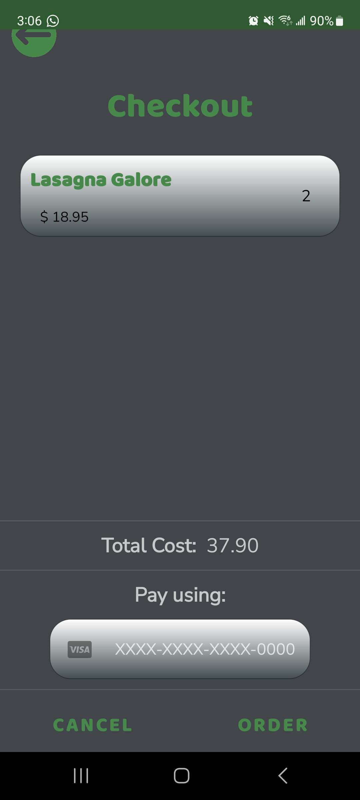
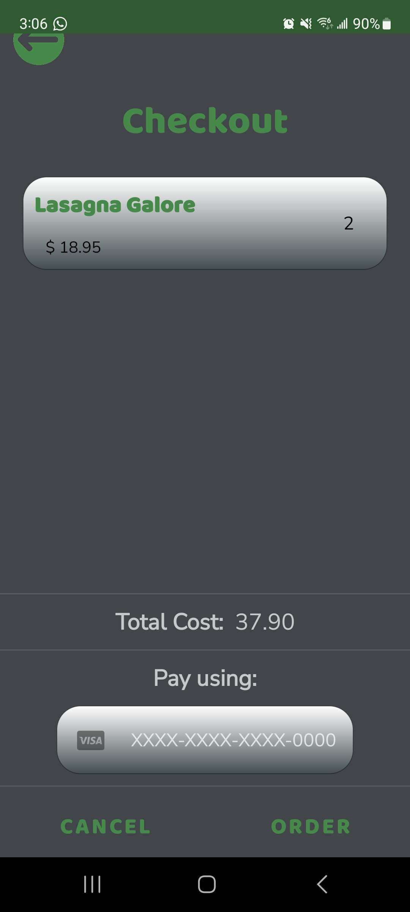

Projects
CMK Hotels


CMK Hotels is a comprehensive website using Next.js and MySQL tailored for a hotel chain, facilitating interactions for both employees and customers
-
Key Features:
- Advanced search functionality for customers to find hotels based on preferences such as location, price range, amenities, and availability
- Responsive booking system allowing customers to easily reserve rooms, manage reservations, and receive confirmation emails
- Dynamic employee dashboard providing real-time updates on room occupancy, guest check-ins, and housekeeping tasks
-
Architecture:
- Utilizes a scalable microservices architecture to handle various aspects of hotel management, including booking, billing, and room maintenance
- Integrates Next.js for server-side rendering and efficient client-side routing, enhancing performance and SEO
- Backed by a robust MySQL database schema designed for optimal storage and retrieval of hotel and guest data

-
Components:
- Customized UI components tailored for seamless navigation and interaction, ensuring an intuitive user experience for both customers and employees
- Modularized data handling components facilitating efficient retrieval, storage, and manipulation of hotel and guest information
- Robust utility components providing essential functionalities such as authentication, session management, and error handling
Mealer App

 

The Mealer App is a Java-based food ordering application developed as part of the SEG2105 course at the University of Ottawa
-
Key Features:
- A one-stop solution for clients to order meals from nearby chefs
- Integration with Firebase for database management
- Test accounts provided for admin, clients, and chefs, facilitating seamless testing
-
Architecture:
- Adopts a Dispatcher-Action-Handler pattern along with elements of Chain-of-responsibility and Model-View-Controller design patterns
- Ensures loose coupling and modularity

-
Components:
- UI components for interface design and interaction
- Data handling components for efficient management of internal and external data
- Utility components for general-purpose functions